第5章 乳腺
原书页 48–60 · 13 个页面区块 · 16 张配图。正文、图注与图片保持原书顺序。
· RB right breast 右侧乳腺
一、 育龄期妇女正常乳腺切面
（一） 正常乳腺声像图（图5-1）
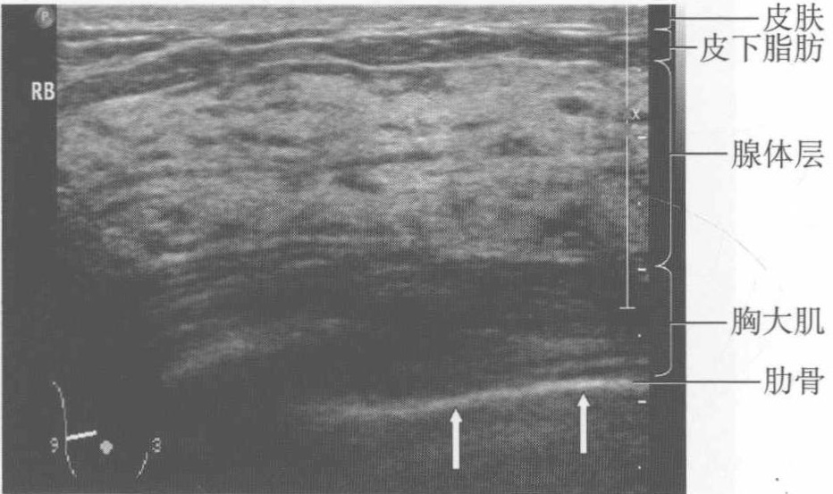
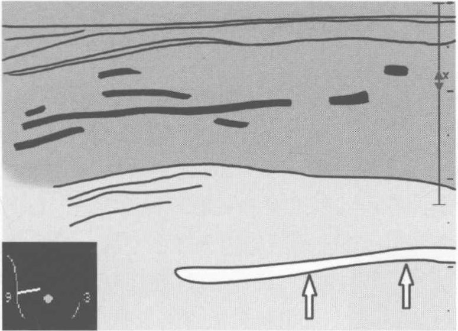
图5-1 育龄期妇女正常乳腺声像图
【扫查方法】 患者仰卧，检查乳房外侧时，可让患者向对侧侧卧位。连续纵切、横切或沿乳头放射状扫查，放射状扫查可较好地显示乳腺导管。
【断面结构】由浅部至深部依次为皮肤、皮下脂肪、腺体层、胸大肌和肋骨。正常乳腺腺体回声不均匀，呈中强回声内夹有条状低回声，中强回声为腺叶及结缔组织，低回声为导管，层次结构清晰。
【测量方法及正常值】一般测量乳腺外上象限浅筋膜和深筋膜之间腺体层厚度，因此处腺体层最厚。腺体层厚度在不同生理阶段（青春期、性成熟期、妊娠期、哺乳期和老年萎缩期）差别较大，且个体差异也较大，无固定的数
值范围。测导管宽度，正常导管宽＜2mm。
【临床价值】观察腺体回声是否均匀，内有无异常回声，层次是否清晰。
（二） 正常乳腺彩色多普勒（图5-2）
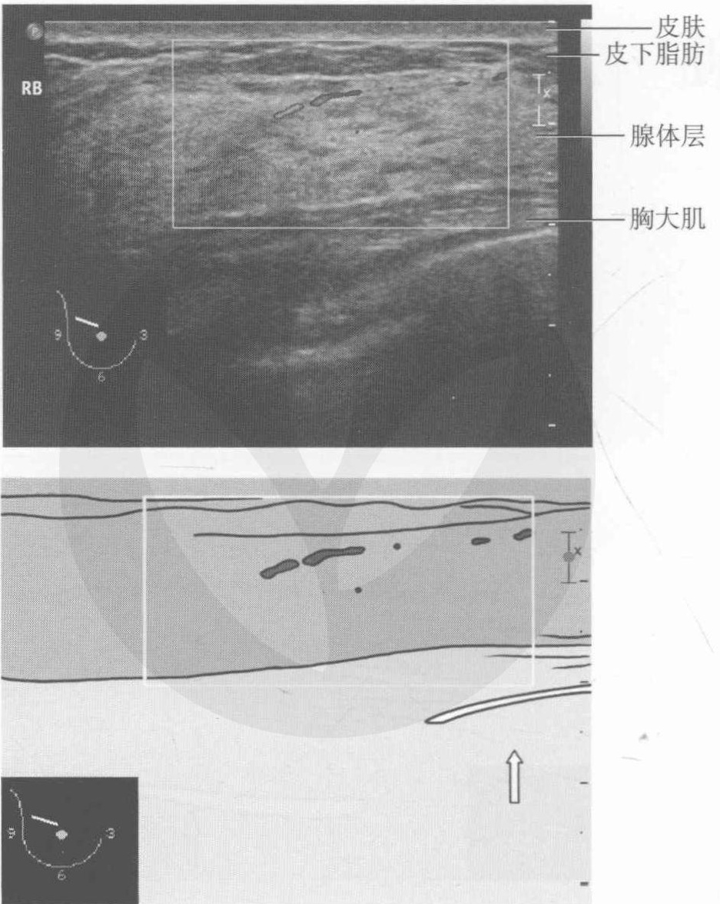
图5-2 育龄期妇女正常乳腺彩色多普勒
【扫查方法】在二维超声的基础上启动彩色多普勒超声，彩色增益调至最大灵敏度而不产生噪声为止，取样框不宜过大。观察肿瘤内部血流时，缩小取样框使彩色敏感性增大。
【断面结构】由浅部至深部依次为皮肤、皮下脂肪、腺体层、胸大肌和肋骨，取样框内蓝色点状及短条状回声为血流信号。
【临床价值】 正常乳腺内可见少量点状或条状血流信号，条状血流信号管径粗细较均匀。扫查中观察乳腺内的血流情况，若发现异常，观察异常部位血流信号的分布、多少及其形态。
（三） 正常乳腺频谱多普勒（图5-3）
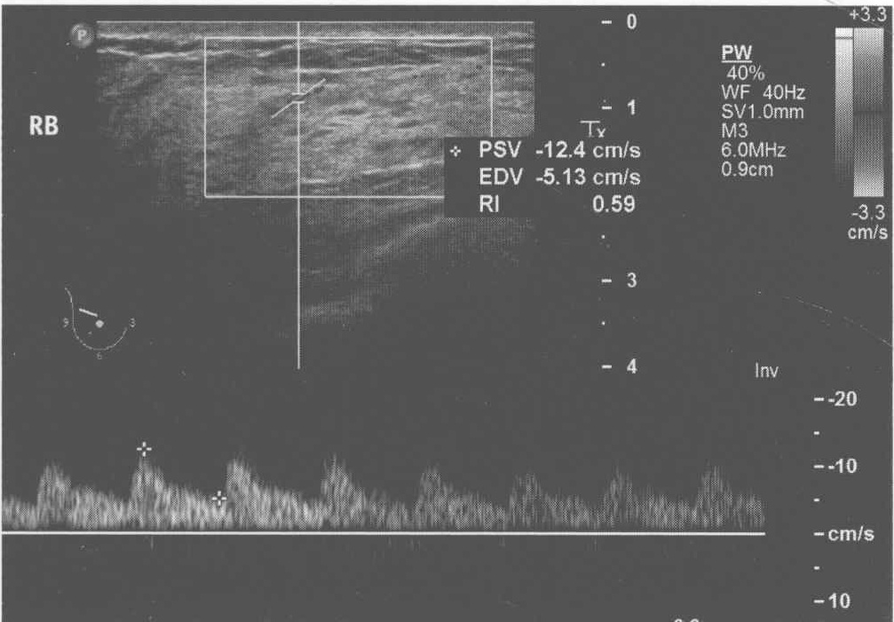
图5-3 育龄期妇女正常乳腺频谱多普勒
【扫查方法】在二维和彩色多普勒超声扫查基础上，启动脉冲多普勒超声，根据血管的内径灵活调节取样容积的大小，设法使声束与血流信号夹角＜60°。
【断面结构】图上方为乳腺结构，下方为多普勒频谱。
【测量方法及正常值】未见正常乳腺流速值报道。但曹久峰等报道，统计学分析以12cm/s为鉴别良、恶性的较理想临界流速值，其对直径2cm以下乳癌诊断敏感性、特异性和准确性分别为95.5%、100%和96.6%。
【临床价值】 正常乳腺为低速低阻型血流频谱。
二、 妊娠中晚期正常乳腺切面图
妊娠中晚期正常乳腺切面见图5-4。
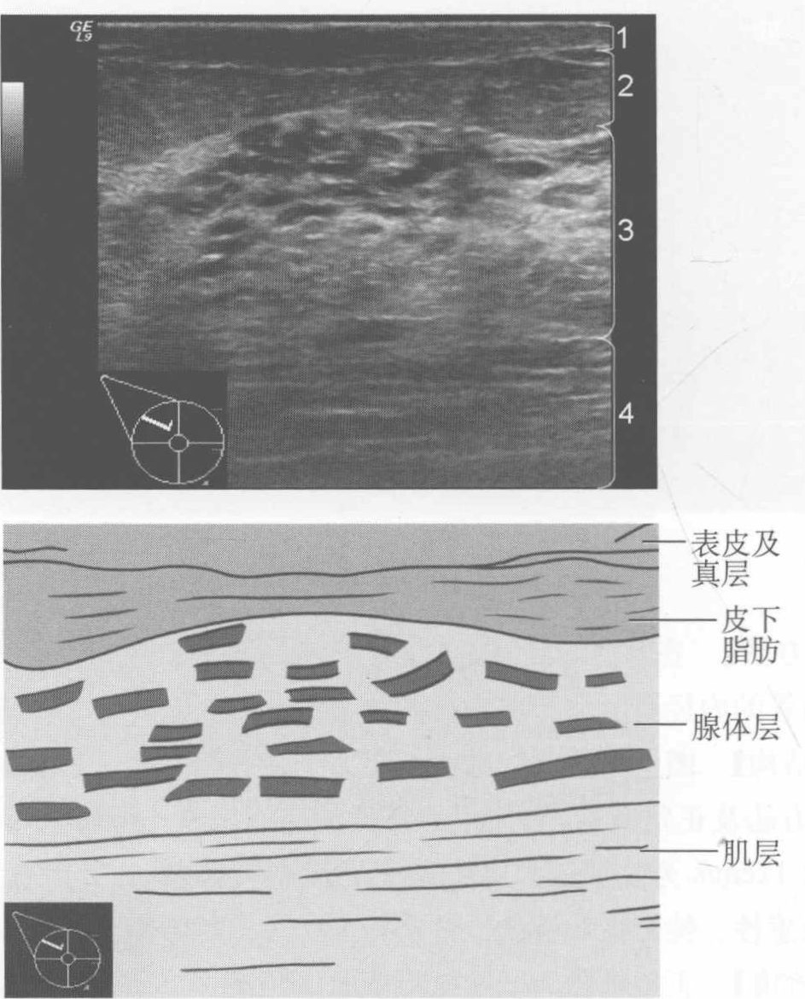
图5-4 妊娠中晚期正常乳腺切面图
注：1. 表皮及真皮；2. 皮下组织；3. 腺体层；4. 肌层
【扫查方法】 患者仰卧，检查乳房外侧时，可让患者向对侧侧卧位：连续纵切、横切或沿乳头放射状扫查，放射状扫查可较好的显示乳腺导管。
【断面结构】由浅部至深部依次为皮肤、皮下脂肪、腺体层、胸大肌。
【临床价值】了解妊娠中晚期乳腺声像图特点。妊娠中期小叶已明显增大，腺泡数量及大小均有显著增长；腺腔有轻微扩张，含有少量分泌物。妊娠晚期乳腺有大量新生的乳管及腺泡形成，小叶间结缔组织大量减少，腺体层较正常增厚，周围脂肪变薄。导管呈低回声或无回声；乳腺间质呈不规则的斑
片状，或粗细不一的条索样低回声或中强回声，腺叶与增粗的乳管交织呈大小不等的蜂窝状。
三、 哺乳期妇女正常乳管切面
哺乳期妇女正常乳管切面见图 5-5。
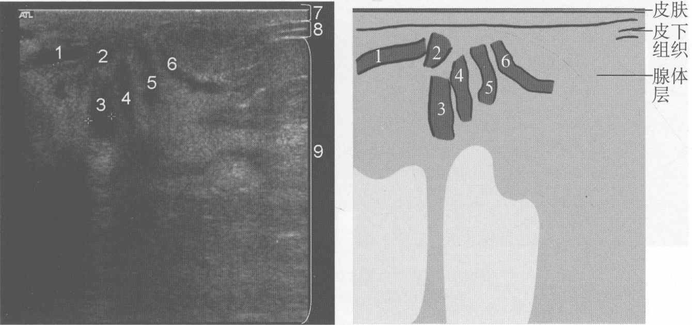
图5-5 哺乳期妇女正常乳管切面
注：1~6.为乳腺导管；7.皮肤；8.皮下组织；9.腺体层
【断面结构】皮肤、皮下脂肪、腺体层及乳腺导管。
【临床价值】观察有无乳汁潴留性囊肿或乳管不规则扩张。乳汁潴留性囊肿声像图表现为圆形或椭圆形无回声，壁光滑纤细，内见弱或稍强点状或絮状回声（稀疏或密集），振动探头或改变体位其内回声呈缓慢流动，应与乳腺脓肿鉴别。见乳管不规则扩张伴浓缩的乳汁团时须与导管内乳头状瘤（或癌）鉴别。
【扫查方法】 在乳头旁横切或纵切。
四、 哺乳期妇女乳腺正常切面
哺乳期妇女乳腺正常切面见图5-6。
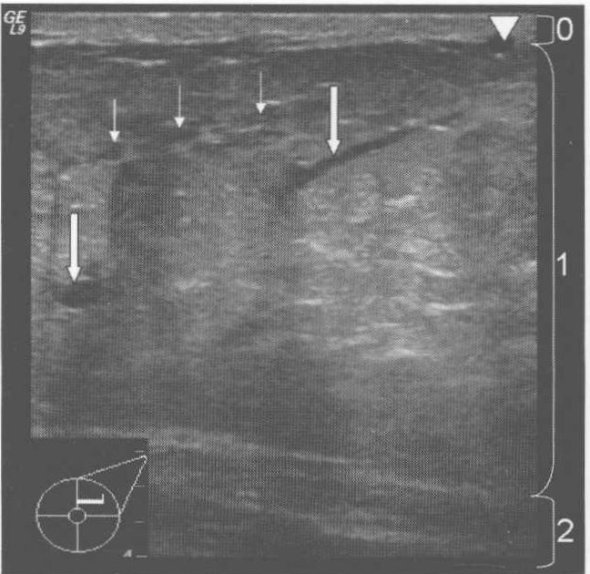
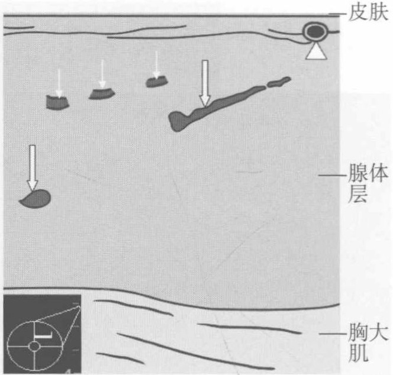
图5-6 哺乳期妇女乳腺正常切面图
注：0.皮肤；1.腺体层；2.胸大肌；大箭头所示导管清晰，小箭头示导管欠清晰，三角形所示为血管
【扫查方法】 患者仰卧，检查乳房外侧时，可让患者向对侧侧卧位。连续纵切、横切或沿乳头放射状扫查，放射状扫查可较好地显示乳腺导管。
【断面结构】由浅部至深部依次为皮肤、腺体层、胸大肌。可见导管和血管。
【临床价值】①了解哺乳期乳腺声像图特点，哺乳期乳腺腺体增厚，脂肪减少，皮下脂肪和腺体后方脂肪明显变薄或消失，乳汁不断分泌、贮存、充填乳管系统。超声检查哺乳期乳腺小叶结构呈密集点状或中粗高回声或低回声，由于乳汁的声密度高于水，乳汁中的脂肪滴呈点状强回声，整个乳腺呈云雾状改变。另外，因乳汁的回声高使外区乳管结构大部分显示欠清晰；而中心区乳管增粗较清晰。②观察乳腺内有无包块，若乳汁潴留性囊肿囊腔内水分逐渐被吸收，乳汁结成硬块，可形成类似实性的包块，此时需与纤维腺瘤和乳腺癌等鉴别。
五、 哺乳期妇女乳腺正常彩色多普勒血流图
哺乳期妇女乳腺正常彩色多普勒血流图见图5-7。
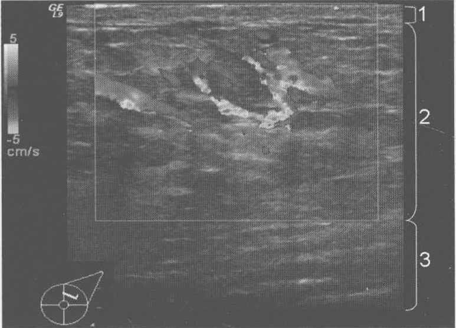
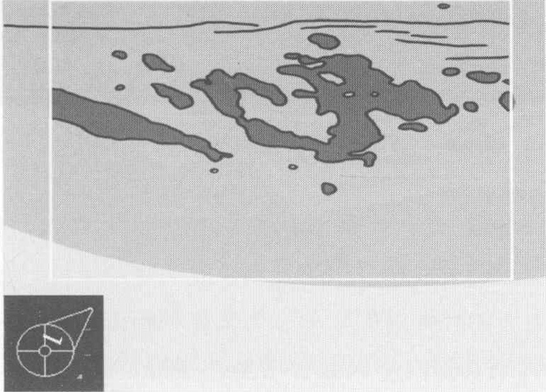
图5-7 哺乳期妇女乳腺正常彩色多普勒血流图
注：1. 表皮及真皮；2. 腺体层；3. 肌层
【扫查方法】在二维超声的基础上启动彩色多普勒超声，彩色增益调至最大灵敏度而不产生噪声为止，取样框不宜过大。观察肿瘤内部血流时，缩小取样框使彩色敏感性增大。
【断面结构】由浅部至深部依次为皮肤、腺体层、胸大肌。
【临床价值】 哺乳期乳腺内血流信号丰富，流速高，阻力指数低，血管增多、增粗，易误认为乳腺异常。文献报道哺乳期乳汁越多，血管越粗，流速越快，阻力指数越低；乳汁分泌不足则相反。
六、 哺乳期妇女正常乳腺多普勒频谱
哺乳期妇女正常乳腺多普勒频谱见图5-8。
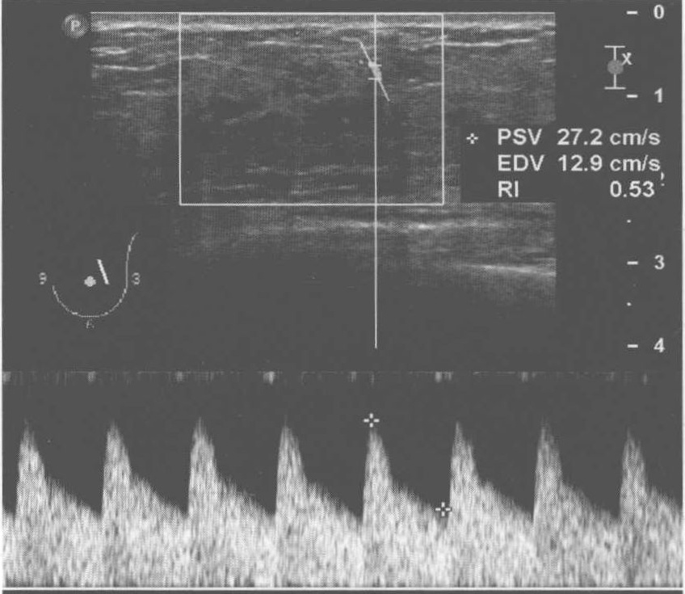
图5-8 哺乳期妇女正常乳腺多普勒频谱
【扫查方法】在二维和彩色多普勒超声扫查基础上，启动脉冲多普勒超声，根据血管的内径灵活调节取样容积的大小，设法使声束与血流信号夹角＜60°。
【断面结构】图上方为乳腺结构，下方为多普勒频谱。
【临床价值】哺乳期乳腺内不仅血管增多、增粗，血流速度也增高，且阻力指数减低。
七、 正常乳腺Cooper韧带切面
正常乳腺 Cooper 韧带切面见图 5-9。
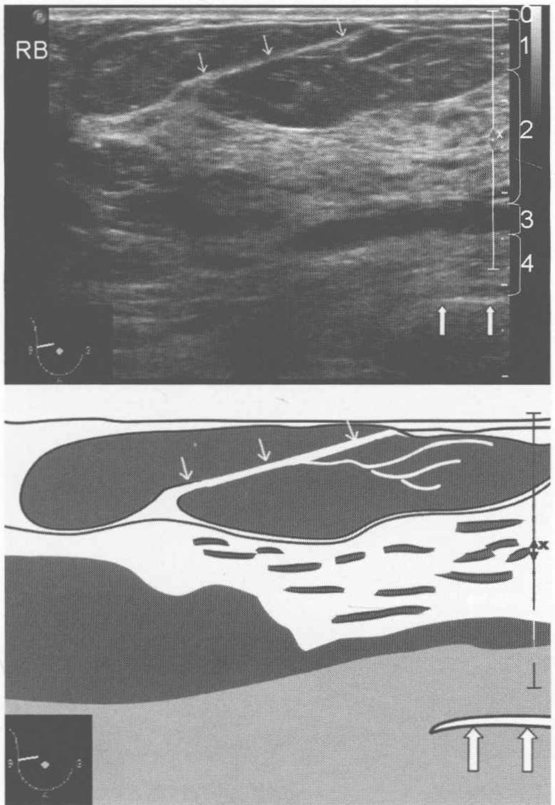
图5-9 正常乳腺Cooper韧带切面
注：0.皮肤；1.皮下组织；2.腺体层；3.腺体后方脂肪；4.胸大肌；细箭头所指为Cooper韧带，粗箭头所示为肋骨
【扫查方法】 患者仰卧，检查乳房外侧时，可让患者取对侧侧卧位。连续纵切、横切或沿乳头放射状扫查，放射状扫查可较好的显示乳腺导管。
【断面结构】由浅部至深部依次为皮肤、皮下脂肪、腺体层、腺体后方脂肪、胸大肌。可见 Cooper 韧带，粗箭头所示为肋骨。
【临床价值】 Cooper 韧带对乳腺的固定和支持起着重要作用。由于 Cooper 韧带两端固定，无伸展性，当被癌肿浸润时，不能随着癌肿的迅速增大而伸长，因此患乳腺癌时，乳腺皮肤表面可形成许多凹陷而呈现出特殊的“橘皮样”
改变。另外，Cooper 韧带可产生后方衰减，该衰减没有诊断意义，但必须与乳腺腺体浅层内病灶尤其是癌灶后方声衰减鉴别，Cooper 韧带产生的衰减起始于腺体前方的脂肪层内，由于脂肪与腺体界面位于其两侧而出现扇形缺口，而恶性病灶的声衰减出现在腺体层内病灶后方，有助于鉴别诊断。
八、 老年妇女正常乳腺的声像图
老年妇女正常乳腺的声像图见图 5-10。
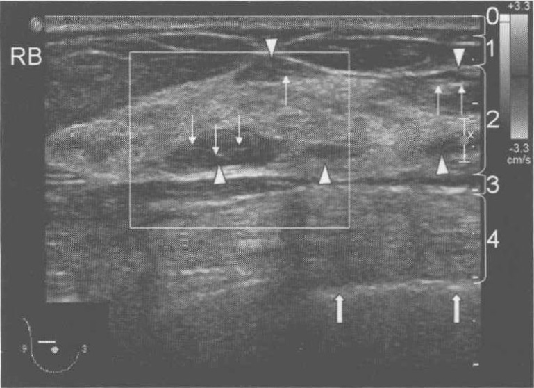
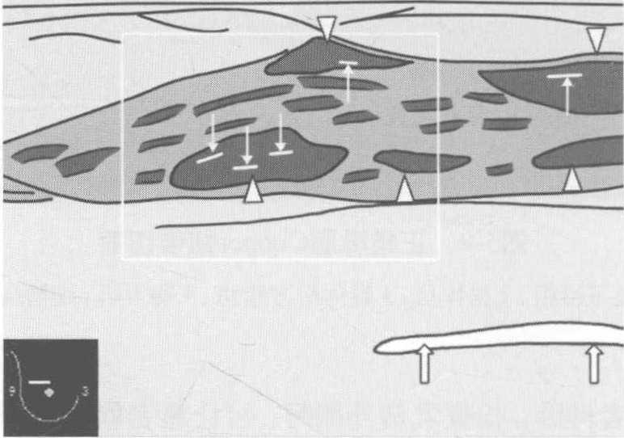
图5-10 老年妇女正常乳腺的声像图
注：0.皮肤；1.皮下脂肪；2.腺体层；3.腺体后方脂肪；4.胸大肌；三角形所示低回声为腺体层内脂肪；细箭头所示为脂肪内线状中强回声；粗箭头所示为肋骨
【扫查方法】 患者仰卧，检查乳房外侧时，可让患者取对侧侧卧位。连续纵切、横切或沿乳头放射状扫查，放射状扫查可较好的显示乳腺导管。
【断面结构】由浅部至深部依次为皮肤、皮下脂肪、腺体层、腺体后方脂肪、胸大肌。
【临床价值】老年妇女乳腺腺体逐渐萎缩变薄，脂肪相对增多，且可伸入乳腺腺体层内。腺体层内的脂肪声像图表现为低回声，内见线状中强回声，CDFI内部无血流信号，须与乳腺肿瘤鉴别。鉴别要点：①以腺体内低回声为支点旋转探头，多数情况下，腺体内脂肪低回声与腺体外的脂肪组织相连或呈条带状；②腺体层内的脂肪组织与乳腺腺体前方的脂肪组织相似，低回声内可见线状中强回声。
九、 正常乳头的切面
正常乳头的切面见图 5-11。
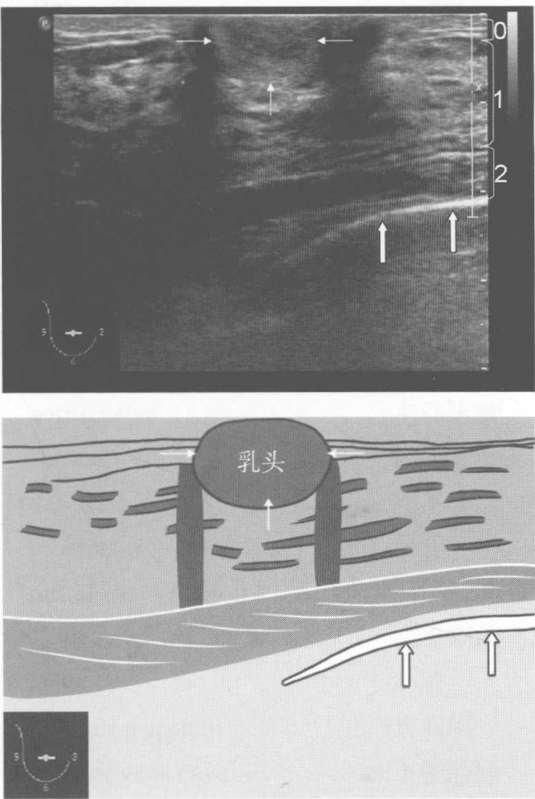
图5-11 正常乳头的切面
注：0.皮肤；1.腺体层；2.胸大肌；细箭头所示为乳头，粗箭头所示为肋骨
【扫查方法】在乳头处横切或纵切。
【断面结构】由浅部至深部依次为皮肤、腺体层、胸大肌（三个大括号所示），细箭头所示为乳头，粗箭头所示为肋骨。
【临床价值】声像图表现：乳头位于皮肤和皮下脂肪层内，呈均匀的中等回声，对腺体层有压迹但与腺体边界清。勿将乳头误认为乳腺浅层腺体内肿瘤或将乳头旁浅层腺体内的肿瘤视为乳头。
（齐振红）